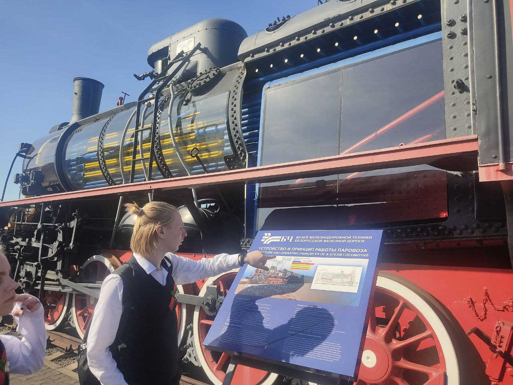
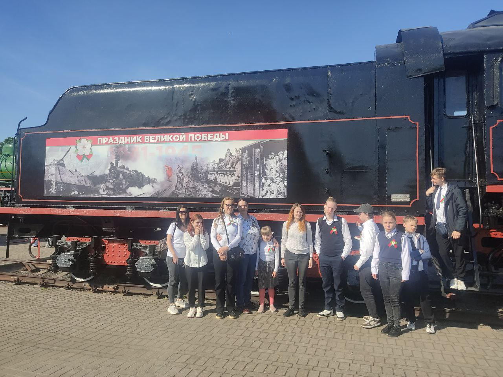
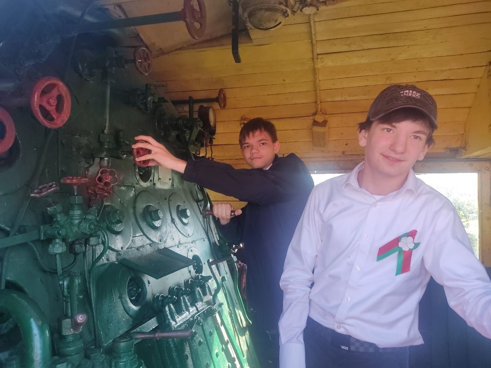

 
Музей железнодорожной техники
Музей железнодорожной техники в Бресте — это одно из самых атмосферных и необычных мест города. Он находится под открытым небом, и здесь можно не просто посмотреть на экспонаты, но и почувствовать дыхание истории, прогуливаясь вдоль гигантов железных дорог прошлого.
Коллекция музея включает десятки единиц подвижного состава: паровозы, тепловозы, электровозы, пассажирские и грузовые вагоны, а также специализированную технику, использовавшуюся для ремонта путей, перевозки почты, военных нужд и многого другого.
Экспозиция охватывает разные исторические этапы — от зарождения паровозной тяги в XIX веке до современных локомотивов, давая возможность проследить технический прогресс и развитие железнодорожного транспорта.
Многие экспонаты можно осматривать не только снаружи — открыт доступ внутрь некоторых локомотивов и вагонов, что делает посещение особенно интересным для детей и взрослых. Это не просто музей — это живой урок истории техники, в котором можно увидеть, услышать и даже прикоснуться к настоящему железнодорожному наследию.
Пройди тест для закрепления результата.
Тест